Suspect 2: Officer Phatty
- Officier Phatty was reported having been annoyed that Catricia was let out of prison for her tax evasion charges. After her death, his attitude suddenly returned to normal.
- Seen stalking Catricia before her death and lied about the reason why
- Suspected of selling maurijuana and cocaine illegally.
- Knew about Catricia's death even though it wasn't public knowledge.
 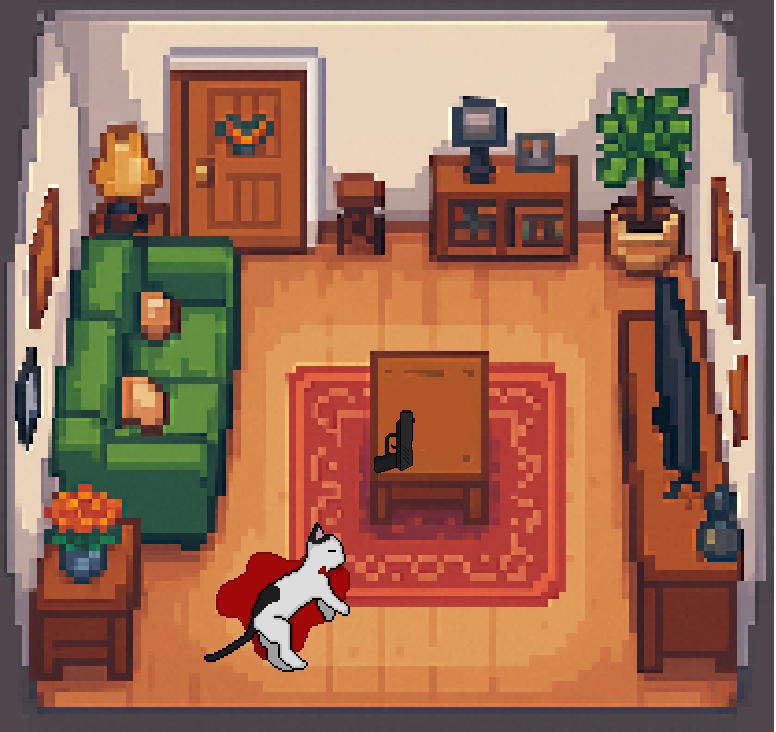
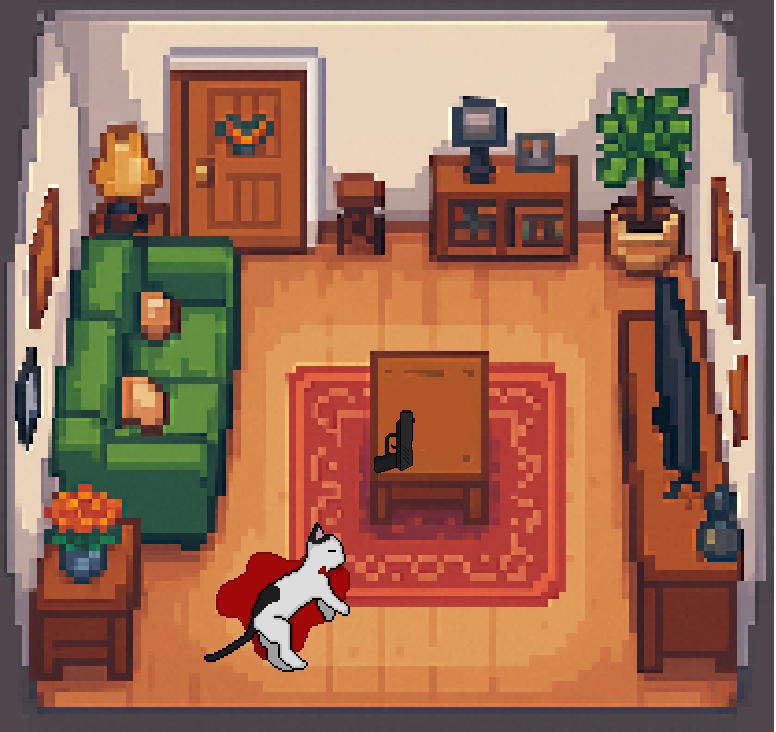

 This is Detective Pussycat.
Right now I am in front of a recently murdered cat's house.
This murder occurred in upper east Paw City.
This is Detective Pussycat.
Right now I am in front of a recently murdered cat's house.
This murder occurred in upper east Paw City.
 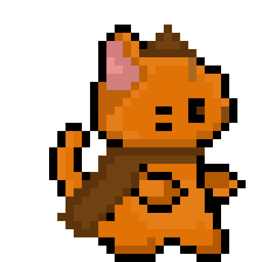
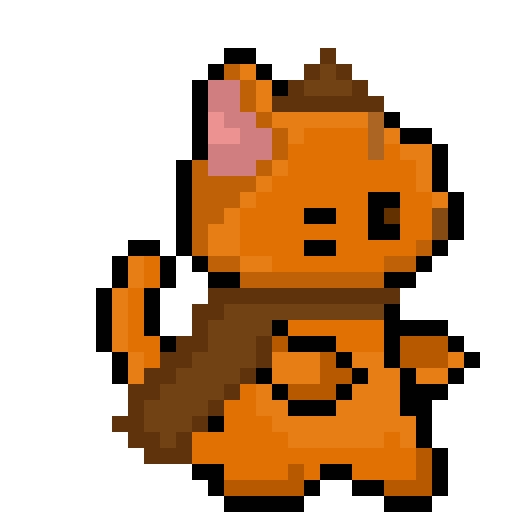

 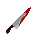
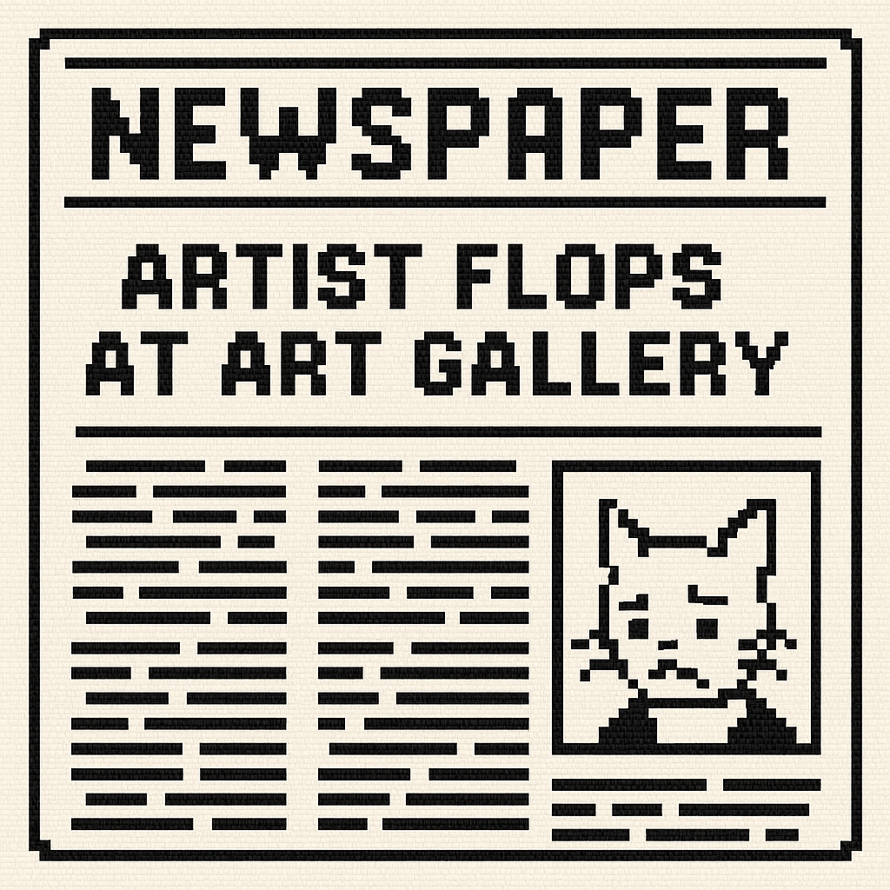
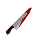
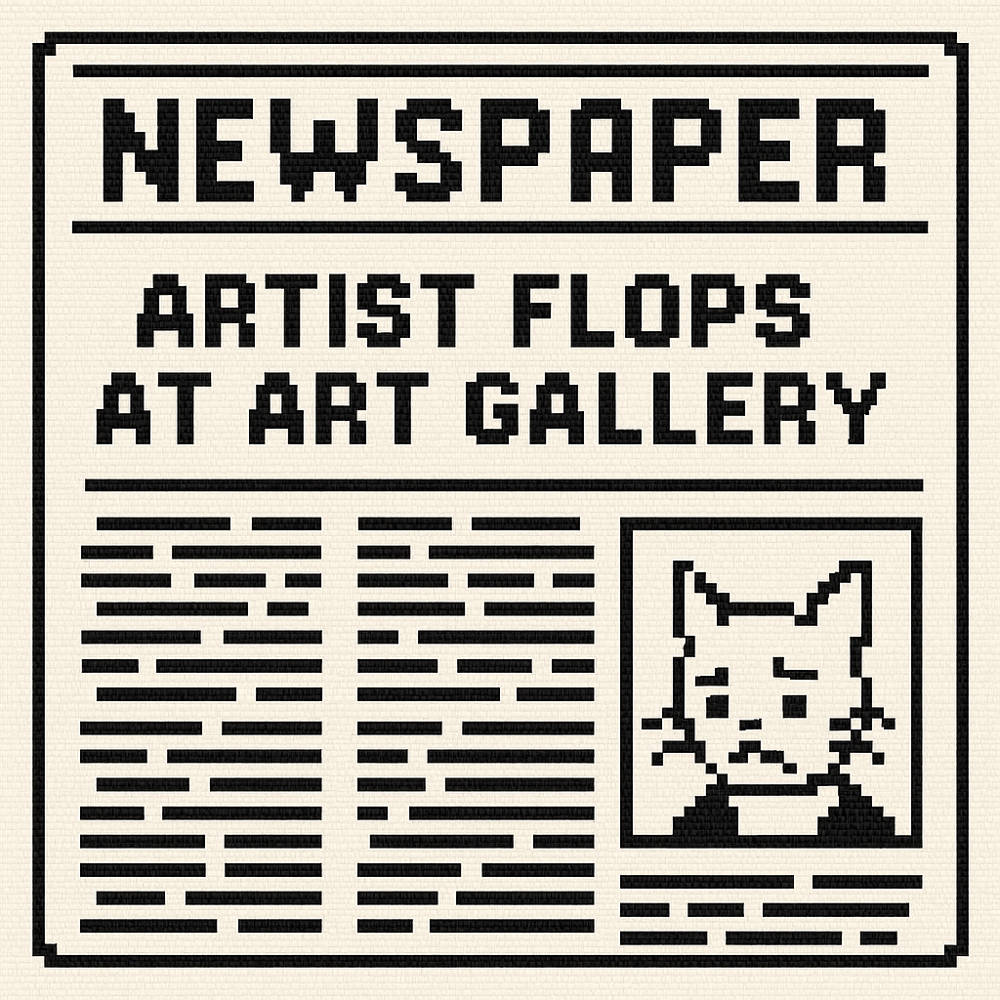
 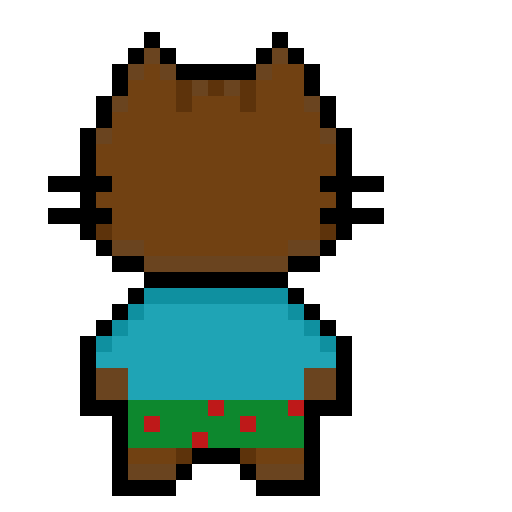
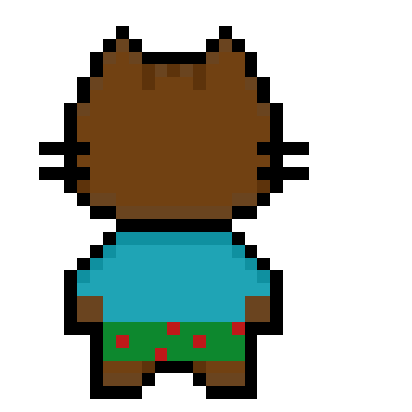
 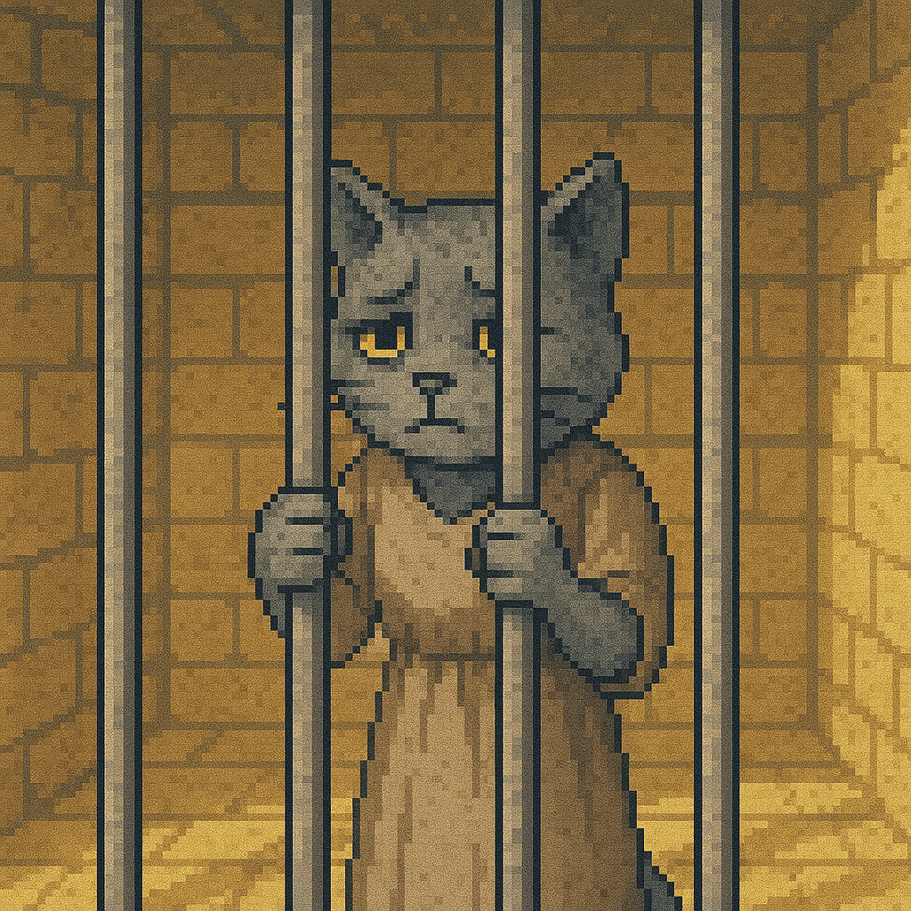
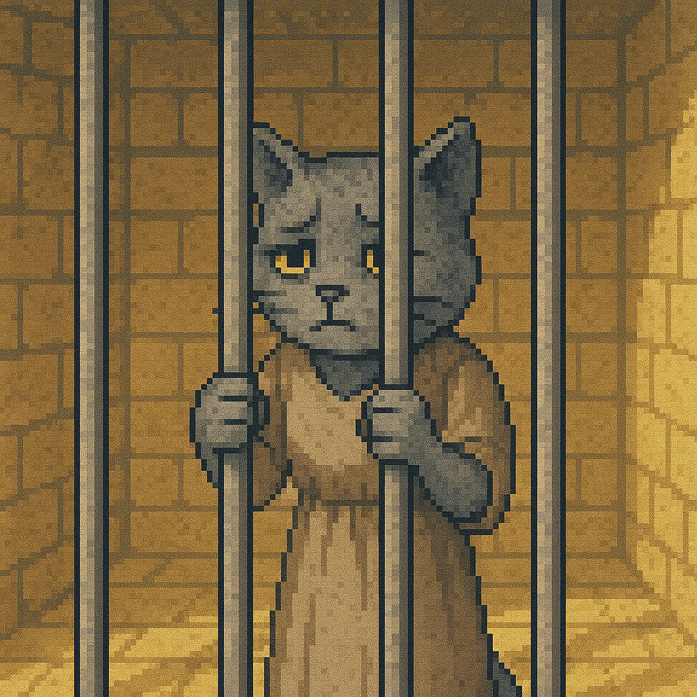